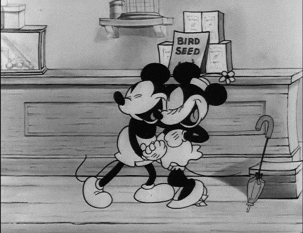

Cartoon
le style cartoon est le style et la forme d'animation la plus vieille , il a notamment été popularisé au tout début de l'animation grâce aux studios fleischer et à dysney auxquels
on doit bons nombres de classiques animées . Depuis on le retrouve un peu partout dans les productions américaines aux simples dessins animés , au film plus ambitieux
des gros studios en passant par des dessins animés plus adultes. Il a beaucoup évolué et a réussi ,au fil des années , à s'émanciper de son statut d'animation "ronde
et stupide" pour atteindre le statut qu'on connait aujourd'hui et cela grâce à de nombreux animateurs passionées ( on peut notamment citer les nine old men neuf animateurs
de génie qui ont poussé le style dans des horizons encore jamais exploités ).

retour à la page initiale